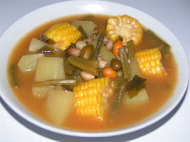

|
|
Cara Memasak Sayur Asem
- Rebus air beserta lengkuas, daun salam, asam muda, garam, gula, dan bumbu-bumbu yang telah dihaluskan hingga mendidih.
- Masukkan semua bahan, masak hingga cukup matangnya.
- Masukkan bahan II ( airnya saja ), masak hingga matang.
- Angkat dan sayur asem siap dihidangkan.
Bahan I
- 75 gr kacang panjang, potong 2 cm
- 75 gr labu siam, potong dadu
- 1 bh jagung, potong bulat dan potong 2 bagian
- 50 gr kacang tanah kulit, cuci bersih
- 75 gr melinjo
- 50 gr daun melinjo
- 75 gr nangka muda, potong serasi
- 3 bh cabai merah, belah 2 bagian dan potong menjadi 2
- 3 cm lengkuas, memarkan
- 3 lbr daun salam
- 75 gr asam muda, kerik, memarkan
- 1000 ml air
- 5 sdm gula pasir
- 3 sdt garam
Bahan II
- 25 gr asam jawa
- 100 ml air panas
Bumbu Halus
- 7 bh bawang merah
- 3 siung bawang putih
- 3 bh cabai merah
- 50 gr kacang tanah
|

Video on Youtube
|